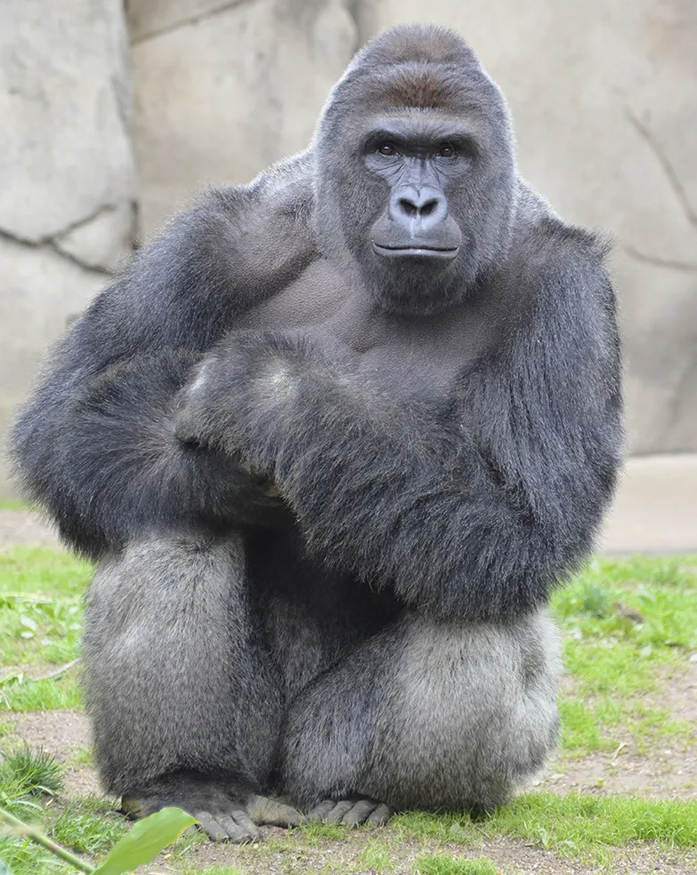

Gone Too Soon: Remembering Harambe, the Beloved Gorilla
Harambe, the gorilla who stole hearts and made headlines, will always be remembered as the primate who lived a short but eventful life. From chilling in the moat to becoming a meme-sensation, Harambe proved that gorillas can have just as much swag as any hipster on the block. Despite his untimely demise, he left a lasting impression on the world. So let's raise a banana in his honor, and remember the gorilla who was just trying to live his best life until it was tragically cut short. Rest in peace, Harambe, you will be missed but never forgotten.